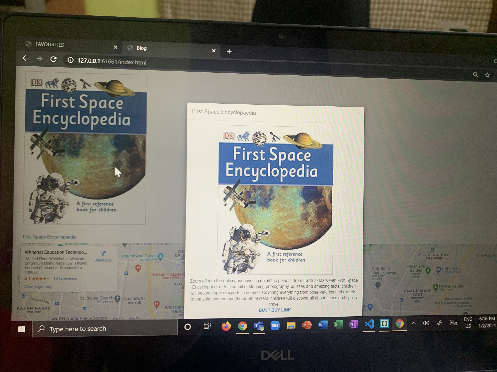

These 2 have been my favourite hobbies over a few years now. I enjoy them and people say I have talent for them. I have been dancing Kathak since a 5years. Recently picking up interest in western dances as well. Coding hasnt been such a long journey for me. Over a span of 1 year this has been a beautiful journey of coding. I try and focus these 2 hobbies as my future. And put my best in both! They are like my wings that I fly on.
A connection between dance and a textbook.
Some reviews and feedback about coding.
Some pictures of my hobbis.

In these 2 hobbies of mine I have an inspiration for each. Let me tell you a little about them.
For coding I inspire the CEO of Whitehat jr. Karan Bajaj!
For Kathak I inspire one of the best Kathak Dancers. Pandit. Birju Maharaj!